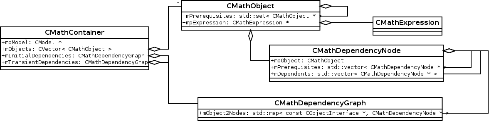

{% include header.html %}
{% include navbar.html %}
{% include structure.html %}
Design Goals:
- Handle all computational calculations
- Supply an efficient dependency graph which determines dependents and prerequisites
- Multiple instances must be executable in parallel
- Allows task specific mathematical model extensions
- Must be compatible with the existing output scheme
- Report discontinuities (piecewise defined functions, floor, and ceil)
Class Overview:

{% include footer.html %}